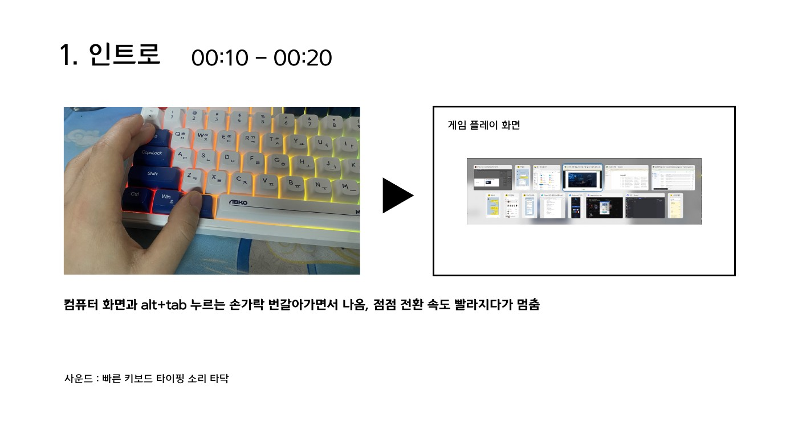
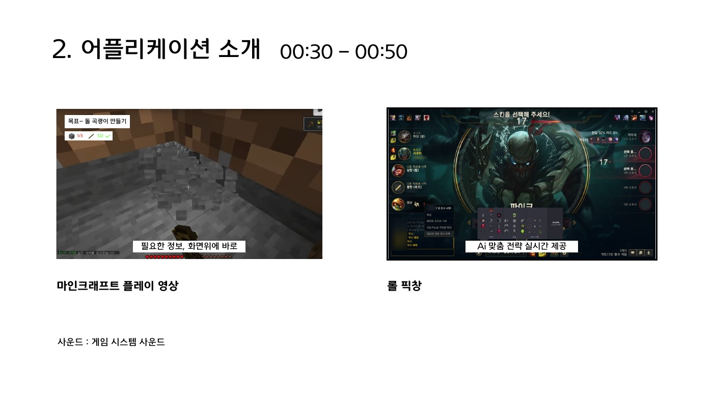
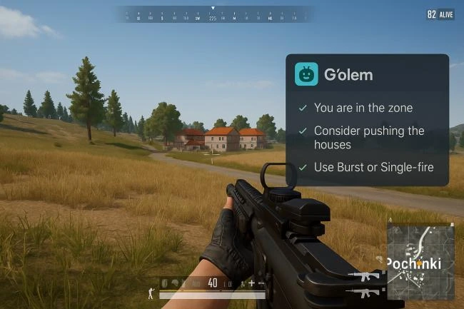

KeyMix · 학생 창업 프로젝트
G’olem
게임을 켜둔 채 공략을 묻는
AI 게임 어시스턴트

공략을 찾는 동안 게임은 멈춘다
새 장비를 주웠는데 어느 쪽이 더 나은지 모르겠을 때, 공략을 찾으려면 게임 창부터 벗어나야 합니다. 검색한 글이 지금 들고 있는 장비에 맞는지도 다시 따져야 합니다. 저는 4인 팀 KeyMix의 팀장으로서 이 불편을 출발점으로 삼고, 플레이 중에 묻고 바로 답을 읽을 수 있는 서비스를 기획했습니다.
안내 내용은 플레이어가 하려는 판단에 맞췄습니다. 장비가 낯선 사람에게는 용도를 알려 주고, 이미 장비를 아는 사람에게는 두 선택지의 차이를 설명해 스스로 고를 수 있게 하는 식입니다.
홍보 영상 콘티
팀이 준비한 7장면 중 두 장면




어느 순간에 무엇을 알려 줄까
장르별 안내를 비교한 창업 대회 제출 시안
다음 행동을 정할 여유가 있는 체스와 안전 구역이 줄어드는 배틀그라운드에서는 필요한 힌트가 다릅니다. 질문에 답하는 방식과 상황을 먼저 알리는 방식을 장면별로 나눠 보았습니다.


마인크래프트를 예로 든 기획안에는 두 방식이 함께 등장합니다. 다음에 할 일을 물으면 가진 자원을 보고 채광을 제안하고, 화살이 부족해지면 화면 한쪽에 알림을 띄웁니다.
창업 준비 결과
- 서비스 기획
- 사용 시나리오와 장르별 안내 시안 제작, 시제품의 기본 동작 확인
- 베타 모집 준비
- 서비스 소개 페이지와 관심 장르를 받는 사전 신청 폼, 이용자가 팁과 피드백을 나눌 게시판 제작
- 대회 입상
- 교내 창업아이디어 대회 입상
- 지원사업 선정
- 학생창업유망팀 300(U300) 선정
교내 창업지원 프로그램 선정 · 지원금과 사무 공간 확보
게임을 만드는 현장을 배우고 싶어진 계기
이 프로젝트에서 확인한 건 서비스 콘셉트와 시제품의 기본 동작까지였습니다. 실제 게임에서 플레이하는 사람에게 언제 힌트가 필요하고 언제 방해가 될지는 여전히 답하기 어려웠습니다.
그 질문 앞에서 기획자로서 제 경험의 한계를 느꼈습니다. 게임을 만드는 사람들이 플레이를 어떻게 관찰하고, 무엇을 근거로 기능을 바꾸는지 현장에서 직접 배우고 싶어졌습니다.